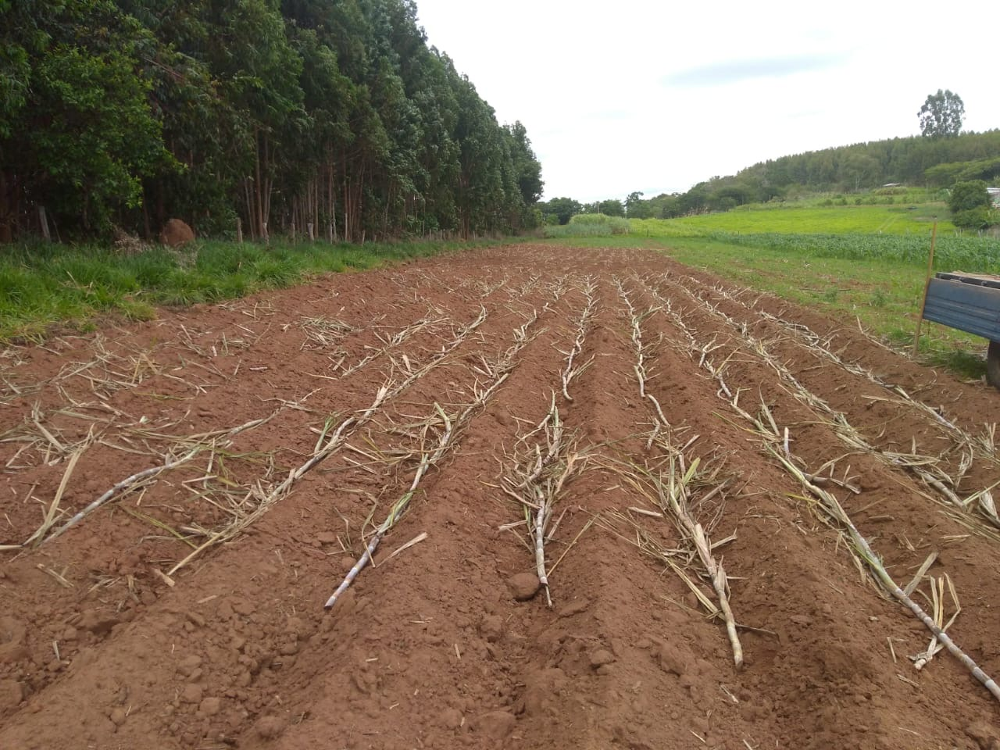

Da Cana ao Sabor
Cada etapa preserva a tradição da verdadeira produção mineira.



Rapaduras artesanais produzidas no interior de Minas Gerais, preservando o verdadeiro sabor da tradição mineira.
De Tradição Familiar
Artesanal
Produção mineira
Conheça os sabores da nossa produção mineira feita com tradição e ingredientes selecionados.
Não se deixe enganar pelo tamanho das fotos! Todas as nossas rapaduras possuem 500g de puro sabor mineiro, produzidas artesanalmente com tradição familiar, ingredientes selecionados e o autêntico gosto da roça.
Qualidade artesanal em cada detalhe
Sem conservantes e feita apenas com ingredientes selecionados.
Produzida artesanalmente no tacho, preservando o sabor original da roça.
Cada produção recebe atenção especial para garantir qualidade e autenticidade.
Cada etapa preserva a tradição da verdadeira produção mineira.

Três gerações preservando o verdadeiro sabor da roça
A produção de rapadura sempre fez parte da minha vida e da história da minha família. Mais do que um trabalho, ela representa tradição, dedicação e um legado construído ao longo de três gerações no interior de Minas Gerais.
Tudo começou com os meus antepassados, passou pelo meu avô, pelo meu pai e continua vivo até hoje através do nosso trabalho. Desde muito novo aprendi no engenho da família o verdadeiro valor da produção artesanal, preservando o sabor autêntico da rapadura da roça feita da forma tradicional.
Em 2012, decidi dar continuidade a esse legado de forma ainda mais forte. Deixei um emprego fixo para investir no sonho de produzir uma rapadura pura, natural e feita com qualidade. O que começou com um pequeno engenho e muita dedicação, hoje se transformou em uma estrutura moderna, sem perder as raízes, a tradição e o carinho da produção artesanal.
Mesmo com a evolução da produção, o meu compromisso continua sendo o mesmo: oferecer um produto natural, feito com cuidado, respeito à tradição mineira e valorização da agricultura familiar. Cada rapadura carrega um pouco da nossa história, da roça e do sabor que atravessa gerações.
Entre em contato e descubra o verdadeiro sabor da rapadura mineira feita com tradição e carinho.
Você tem certeza que deseja apagar este sabor?